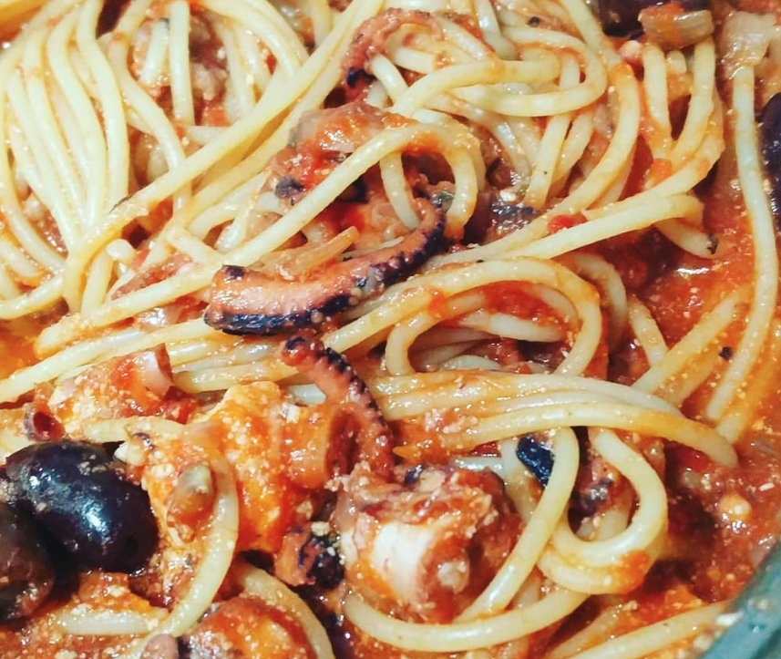

Pasta al Polpo

Ingredients
- Tomato Passata
- Tomato paste
- Red Wine
- Parmesan
- Pasta of your Choice, we used Spaghetti here
- Polpo (Octopus)
- Olives
- Walnuts
- Apple
- Capers
- Garlic
- Onions
- Celery
- Bay leaves
Method
- Fill a pot with cold water, put the Octopus and put it on high heat, throw in some garlic, onion and celery
and salt, whole peppercorns, and bay leaves
- Chop your sofrito (onion, garlic, celery) cook in a pan
- The Octopus is going to take approx 1 hour, once it starts boiling, turn down the heat and cook until your
reach an hour, turn of the heat and let is sit until it goes completely cold.
- With the Octopus taking so long you'll have an advantage with in making the best tomato sauce, once you have
cooked the sofrito, add red wine (you are allowed to have a sip too) let it reduce on low heat (you have
plenty of time)toss in the walnuts until they crips later followed by a chopped apple, olives and capers
then add tomato paste mix well, and add Tomato passata along with the same amount of water and generous salt
and pepper.
- Now you have everything going, your job is to simply stir the sauce every now and then. When you see that
the sauce needs more water you can add some of the Octopus water, while you are at it check if its gone cold
too.
- When the octopus is finally cold, take it out (do not throw the water away yet) chop the octopus and throw
it in your sauce.
- Let the Octopus mix nicely with your sauce (by now you should be at least a bottle of wine down) throw the
pasta in the octopus water and par cook it, once your pasta is half done you are going to throw it in your
sauce to finish cooking there and mix wonderfully.
- Turn of the heat and let everything sit nicely, open another bottle of wine sit down and enjoy... oh and
plate up